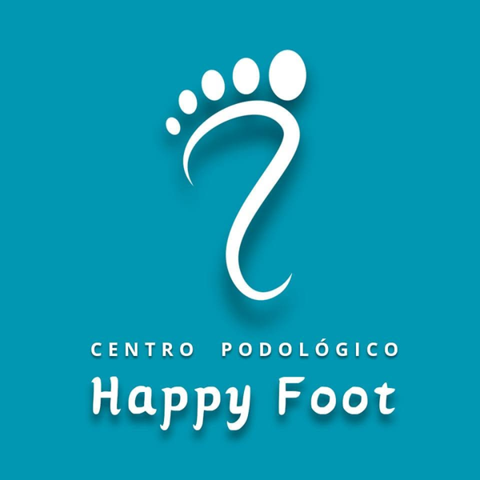
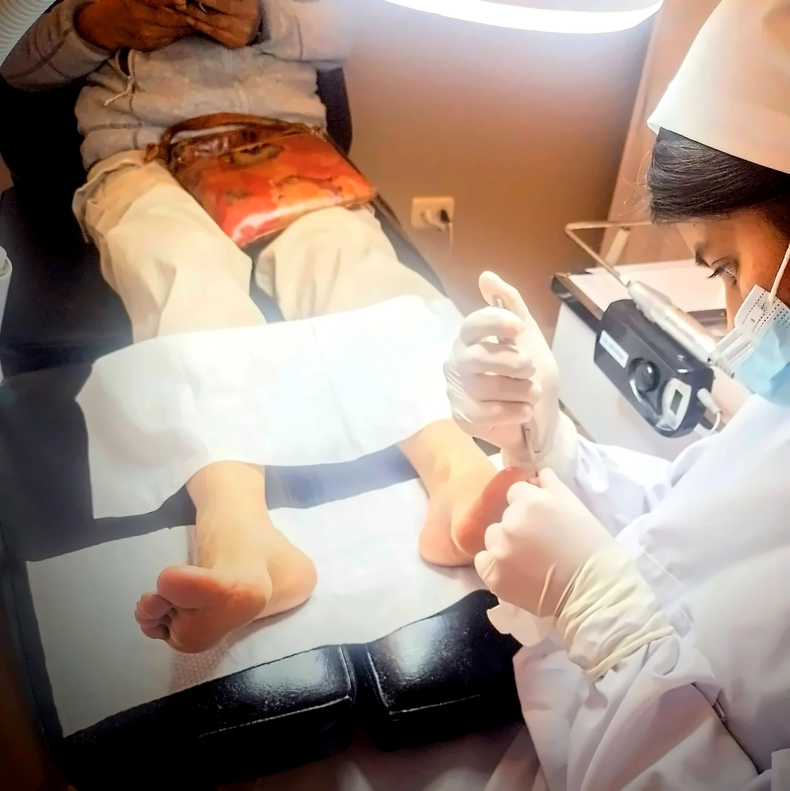
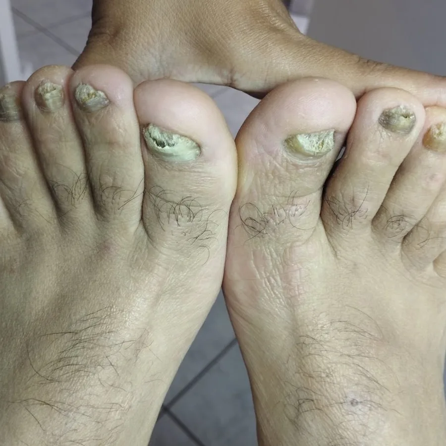
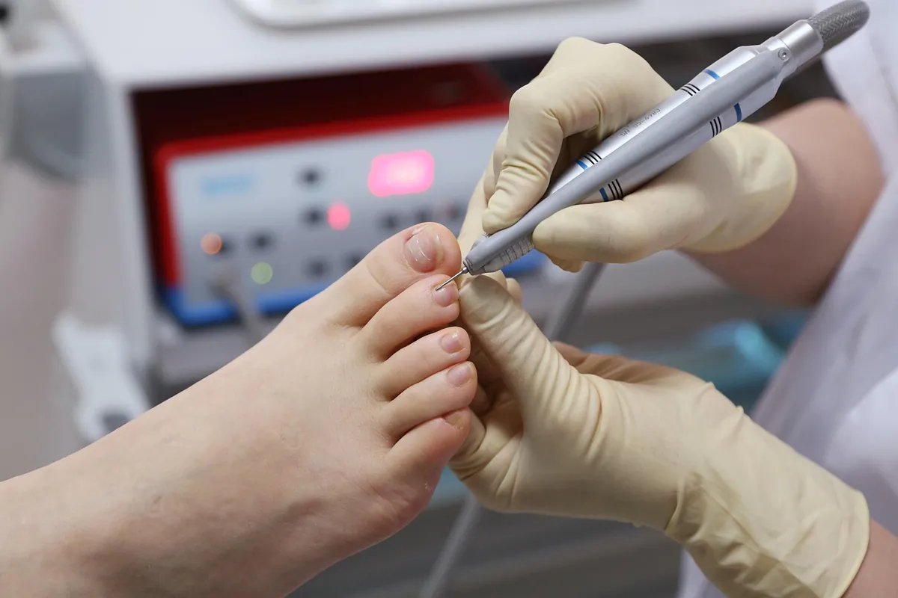
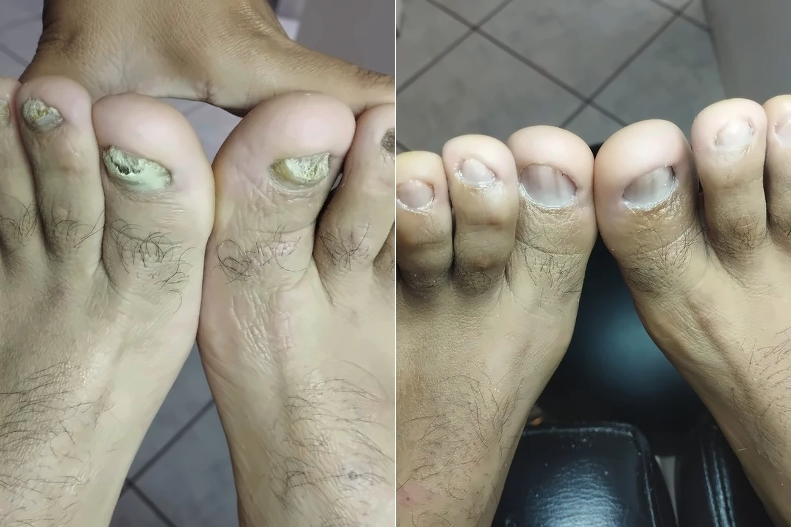
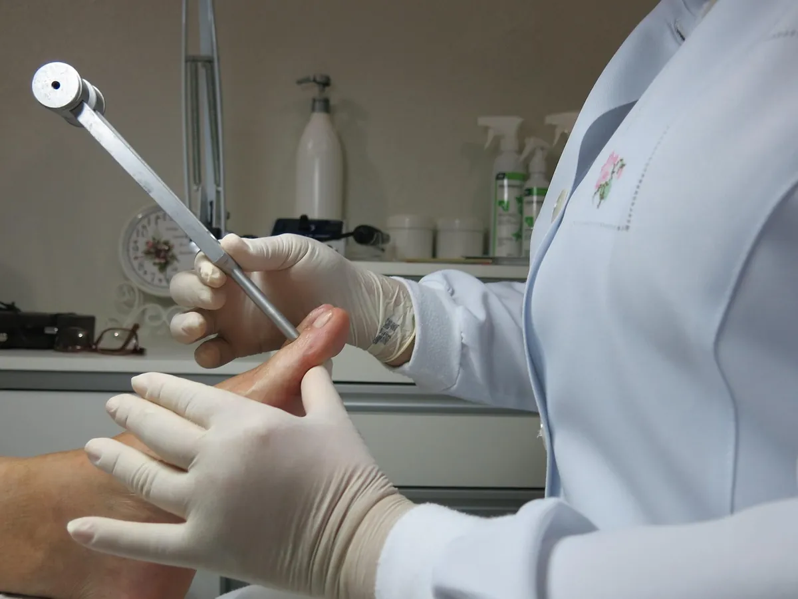

Centro Podológico
Happy Foot
Huanta · Ate · Santa Anita
Especialistas en tratamientos de hongos en las uñas y el cuidado de tus pies
Evaluamos el estado de tus uñas y pies para ofrecerte una atención personalizada y un plan adecuado para tu caso.
Atención personalizada
Personal especializado
Resultados reales
Instrumentación estéril
Desde 2021

Accesos rápidos

Tratamiento de hongos en las uñas
Evaluación y manejo podológico de uñas afectadas por hongos.
Ver más
Cuidado integral para tus pies
Ofrecemos diferentes tratamientos podológicos adaptados a cada necesidad.
Ver más
Observa la evolución
El seguimiento permite observar los cambios a medida que la uña crece.
Ver más
Encuentra tu sede
Estamos cerca de ti. Elige la sede más conveniente y reserva tu atención.
Ver másEstamos listos para atenderte
Encuentra la sede más cercana y reserva tu atención por WhatsApp.